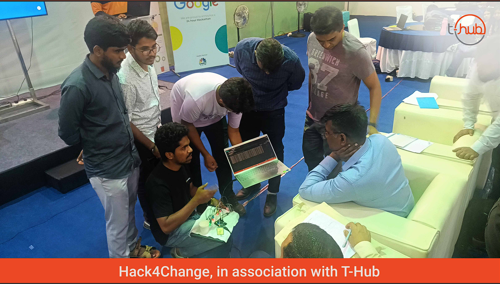

This page is a demo for GenEthica interactive video player
Instructions
1. Start Recording: Click the large red button to begin recording(Even if the click button does not appear, simply click on the icon)
2. Stop and Download: Once you have finished recording, stop the recording process. You can then download the file by clicking the download icon next to the recording button in yellow colour.please scroll right if it did not appear.
3. Playback: After downloading, you can replay the recording at your convenience.simple ectract the downloaded file and open the html file.Pause the video to edit the text you have written in the box .(The project is 100% working. If you encounter any issues, please repeat the process.
4. Integration Options: We offer integration with media files, code editors, and virtual machines. (Below is an image of our team during the top 5 final presentation at the Charcha 2023 hackathon :)).
5. AI Integration: We are actively working on hosting a Unity project for interactive character engagement related to the course. Please watch our demo video for more details.

Type whatever you want:
Here too !